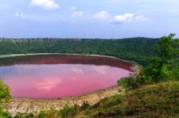

Lonar Lake, also known as Lonar crater, is a notified National Geo-heritage Monument, saline, soda lake, located at Lonar in Buldhana district, Maharashtra, India. Lonar Lake was created by a meteorite collision impact during the Pleistocene Epoch. It is one of the four known, hyper-velocity, impact craters in basaltic rock anywhere on Earth. The other three basaltic impact structures are in southern Brazil. Lonar Lake has a mean diameter of 1.2 kilometres (3,900 ft) and is about 137 metres (449 ft) below the crater rim. The meteor crater rim is about 1.8 kilometres (5,900 ft) in diameter. Lonar Crater sits inside the Deccan Plateau – a massive plain of volcanic basalt rock created by eruptions some 65 million years ago. Its location in this basalt field suggested to some geologists that it was a volcanic crater. Today, however, Lonar Crater is understood to be the result of a meteorite impact. The water in the lake is both saline and alkaline.
Timing : no restrictions
